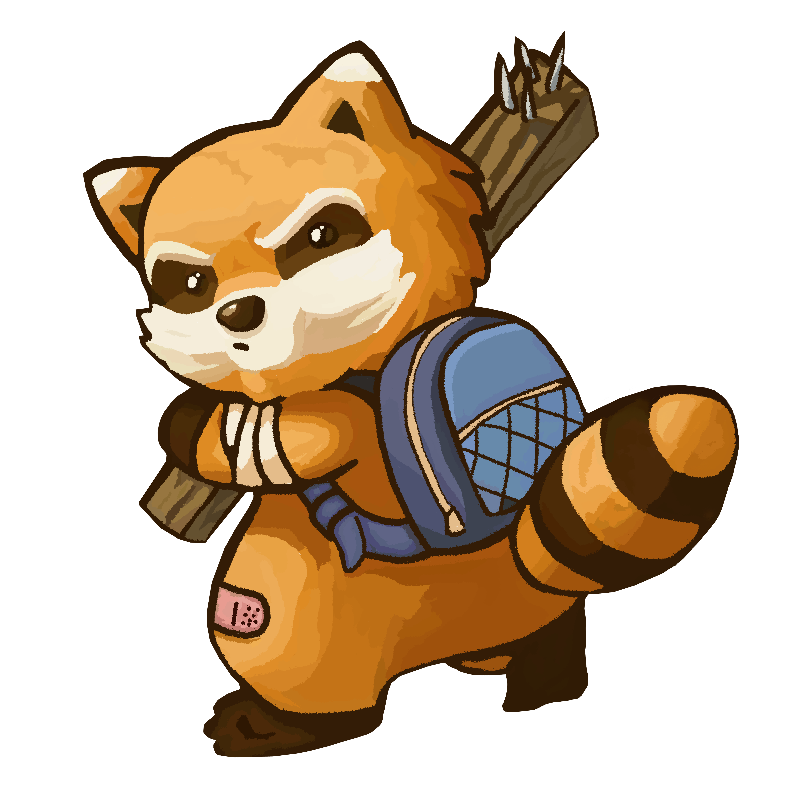

Jogos
Jogos de Sobrevivência e Terror

Minha paixão por jogos sempre foi uma força motriz na minha vida. Desde cedo, fui cativado não apenas pela diversão e desafio que eles proporcionam, mas pela capacidade
que têm de contar histórias, criar mundos e envolver o jogador em experiências imersivas. Essa paixão só cresceu com o tempo, e hoje sei que quero fazer parte da criação
desses universos.
Embora eu ainda não tenha me envolvido diretamente no desenvolvimento de jogos, meu objetivo é claro: quero criar meu próprio jogo e fazer parte de uma equipe dedicada
a essa arte. Jogos como Project Zomboid e 7 Days to Die me inspiram profundamente, mostrando que um bom jogo não precisa ter os gráficos mais avançados, mas sim uma
jogabilidade cativante e mecânicas bem pensadas. Eles são a prova de que é possível criar algo inovador e envolvente com os recursos certos e uma ideia sólida.
O que me motiva é essa possibilidade de criar algo que mexa com as pessoas da mesma forma que os jogos mexeram comigo. Trabalhar em uma equipe de desenvolvimento
é uma etapa fundamental para aprender, trocar ideias e trazer novas perspectivas para o que podemos criar juntos. Mesmo sem ter me envolvido diretamente ainda, essa
paixão é o que me impulsiona a seguir em frente, estudar e buscar oportunidades no mundo do desenvolvimento de jogos.
Uma ideia interessante para enriquecer a jogabilidade de 7 Days to Die e Project Zomboid seria a adição de mais interações e funcionalidades para os veículos,
especialmente os de duas rodas. Em 7 Days to Die, um toque simples como a implementação de um "pezinho" para as motos e bicicletas traria um charme extra e uma
sensação de realismo ao jogo. Imagine ter que estacionar adequadamente sua moto para não vê-la tombar enquanto você explora ou luta contra hordas de zumbis.
Além disso, a adição oficial de reboques em ambos os jogos abriria um leque de possibilidades muito interessante. No 7 Days to Die, por exemplo, os reboques poderiam
ser usados para carregar grandes quantidades de recursos ou materiais de construção, permitindo ao jogador ser mais eficiente em suas explorações e projetos de base.
No Project Zomboid, os reboques seriam uma excelente maneira de expandir a capacidade de transporte de suprimentos, especialmente em missões de coleta em massa, o que
faria uma diferença gigantesca em termos de planejamento estratégico.
Outra mecânica que poderia levar os dois jogos a um novo patamar é a interação com água. Em 7 Days to Die, atualmente a água é mais um obstáculo do que um recurso.
Adicionar a possibilidade de construir barcos ou até mesmo usar materiais para navegar poderia abrir novas opções de exploração e sobrevivência. Em Project Zomboid,
a introdução de barcos ou travessias aquáticas permitiria ao jogador escapar de situações perigosas ou explorar áreas antes inacessíveis, aumentando a tensão e a
dinâmica do jogo.
Essas adições não só trariam mais realismo como também diversificariam as estratégias dos jogadores, melhorando a imersão e criando novas possibilidades em mundos já
ricos e complexos.
Project Zomboid e 7 Days to Die são dois exemplos perfeitos de jogos que não dependem de gráficos ultra-realistas para entregar uma experiência intensa e viciante.
Ambos têm estilos gráficos mais simples, mas se destacam em outros aspectos que os tornam incrivelmente imersivos e populares.
Project Zomboid é um jogo de sobrevivência em um mundo aberto infestado por zumbis, onde cada decisão pode ser a diferença entre viver ou morrer. O visual é bem simples,
com um estilo isométrico que lembra jogos mais antigos, mas o nível de detalhes no sistema de sobrevivência é insano. Nele, você precisa se preocupar com fome, sede,
doenças, traumas psicológicos e até a construção de uma base segura para evitar ser devorado pelos mortos-vivos. A verdadeira beleza de Zomboid está na sua jogabilidade
emergente, onde cada partida pode se desenrolar de uma maneira completamente diferente, baseada nas suas escolhas e nos perigos que você encontra pelo caminho. Aqui,
o foco está em simulação e sobrevivência extrema, onde um erro pode ser fatal, e a imersão vem da tensão constante de estar sempre a um passo da morte.
Já 7 Days to Die mistura o gênero de sobrevivência com elementos de crafting e tower defense. Apesar dos gráficos não serem o ponto forte, o que realmente prende os
jogadores é a dinâmica da horda de zumbis que aparece a cada sete dias, forçando você a planejar e fortificar sua base constantemente. A mecânica de construção é
extremamente detalhada, permitindo que você crie verdadeiras fortalezas ou abrigos improvisados, dependendo dos recursos disponíveis. O combate contra os zumbis e
a coleta de materiais são outros elementos que, junto com a pressão constante de tempo, tornam o jogo viciante. Além disso, o multiplayer de 7 Days proporciona uma
experiência cooperativa única, onde jogar com amigos para sobreviver às hordas pode ser tão divertido quanto desafiador.
Em ambos os jogos, o que os torna especiais é a profundidade da experiência de sobrevivência e a tensão constante, provando que gráficos não são tudo. O que importa
é a sensação de estar imerso em um mundo hostil e a satisfação de superar desafios brutais.
Aqui está uma lista com meus youtubers favoritos
 Gameplays do Andarilho: Canal focado em Gameplays. Séries como Project Zomboid, 7 Days To Die, Rust, The Forest, Ark, Conan Exiles e mais jogos
de sobrevivência, novos lançamentos e muito mais. O objetivo do canal é trazer o entretenimento para você através dos vídeos e lives. Aqui está uma
playlist
com os últimos vídeos do canal. Outros links relacionados: Canal. Tenho uma
Inscrição Grupo 1 na Twitch com Benefícios de inscrição - Apoiar diretamente o streamer -
Transmissões sem anúncios (com poucas exceções) - Distintivo de inscrito - Fale no chat durante o modo exclusivo para inscritos. - Não é afetado pelo modo de chat
lento - 20 emotes de inscrito - 1 benefício adicional - Canais de Discord exclusivos para inscritos. Outros links:
Canal de lives /
Giveway /
Instagram /
Discord.
Gameplays do Andarilho: Canal focado em Gameplays. Séries como Project Zomboid, 7 Days To Die, Rust, The Forest, Ark, Conan Exiles e mais jogos
de sobrevivência, novos lançamentos e muito mais. O objetivo do canal é trazer o entretenimento para você através dos vídeos e lives. Aqui está uma
playlist
com os últimos vídeos do canal. Outros links relacionados: Canal. Tenho uma
Inscrição Grupo 1 na Twitch com Benefícios de inscrição - Apoiar diretamente o streamer -
Transmissões sem anúncios (com poucas exceções) - Distintivo de inscrito - Fale no chat durante o modo exclusivo para inscritos. - Não é afetado pelo modo de chat
lento - 20 emotes de inscrito - 1 benefício adicional - Canais de Discord exclusivos para inscritos. Outros links:
Canal de lives /
Giveway /
Instagram /
Discord.
Se inscrever no canal do Andarilho no YouTube me mantém atualizado sobre os últimos jogos de sobrevivência. Seus vídeos oferecem análises detalhadas, gameplays envolventes e dicas valiosas que melhoram minha experiência de jogo. Além disso, ganhei o Red Dead Redemption graças a uma promoção realizada pela nova patrocinadora do canal, Instant Gaming. Isso me deu a chance de jogar um título incrível e mostrou o quanto o Andarilho valoriza seus inscritos. Em resumo, acompanhar o canal do Andarilho me mantém informado e preparado para os desafios dos jogos de sobrevivência, tornando minha experiência ainda mais emocionante e gratificante.
Setup Completo
aqui.
 Gameplays do MaxMRM: O Canal MaxMRM GAMEPLAY é um canal dedicado ao mundo dos GAMES e feito para os gamers!
Com postagens frequentes contendo dicas, gameplays, reviews, tutoriais, easter eggs e muito mais.
O canal está em constante evolução trazendo cada vez mais conteúdo e buscando sempre o melhor resultado audiovisual.
Aqui está uma
playlist
com os últimos vídeos do canal. Outros links relacionados:
Canal.
Ser inscrito no canal do MaxMRM é como ter um guia pessoal no mundo dos jogos de terror! Ele traz análises detalhadas, gameplays envolventes e sempre está por dentro das últimas novidades. Além de ser um ótimo jogador, MaxMRM tem experiência como diretor criativo de um jogo indie, então ele sabe do que está falando! Suas dicas e insights não só melhoram nossa experiência de jogo, mas também nos fazem sentir parte de uma grande família gamer. Em resumo, o canal do MaxMRM é o lugar perfeito para ficar atualizado, se divertir e aprender mais sobre os jogos de terror, tudo com aquele toque especial que só ele tem! Desde 2016, tenho acompanhado o canal MaxMRM e assisti a todos os 3.609 vídeos postados até hoje. Ao explorar jogos de terror indie, MaxMRM oferece visibilidade essencial para criadores independentes, destacando a importância de apoiar essas produções inovadoras e únicas.
O conteúdo do Max sempre me atraiu pelo seu jeito único de apresentar e pela qualidade das análises e gameplays. É incrível como ele consegue manter o canal tão dinâmico e interessante ao longo dos anos. Estou sempre ansioso pelos novos vídeos e continuo sendo um grande fã do Max!
Gameplays do MaxMRM: O Canal MaxMRM GAMEPLAY é um canal dedicado ao mundo dos GAMES e feito para os gamers!
Com postagens frequentes contendo dicas, gameplays, reviews, tutoriais, easter eggs e muito mais.
O canal está em constante evolução trazendo cada vez mais conteúdo e buscando sempre o melhor resultado audiovisual.
Aqui está uma
playlist
com os últimos vídeos do canal. Outros links relacionados:
Canal.
Ser inscrito no canal do MaxMRM é como ter um guia pessoal no mundo dos jogos de terror! Ele traz análises detalhadas, gameplays envolventes e sempre está por dentro das últimas novidades. Além de ser um ótimo jogador, MaxMRM tem experiência como diretor criativo de um jogo indie, então ele sabe do que está falando! Suas dicas e insights não só melhoram nossa experiência de jogo, mas também nos fazem sentir parte de uma grande família gamer. Em resumo, o canal do MaxMRM é o lugar perfeito para ficar atualizado, se divertir e aprender mais sobre os jogos de terror, tudo com aquele toque especial que só ele tem! Desde 2016, tenho acompanhado o canal MaxMRM e assisti a todos os 3.609 vídeos postados até hoje. Ao explorar jogos de terror indie, MaxMRM oferece visibilidade essencial para criadores independentes, destacando a importância de apoiar essas produções inovadoras e únicas.
O conteúdo do Max sempre me atraiu pelo seu jeito único de apresentar e pela qualidade das análises e gameplays. É incrível como ele consegue manter o canal tão dinâmico e interessante ao longo dos anos. Estou sempre ansioso pelos novos vídeos e continuo sendo um grande fã do Max!